B
B1: Ivinghoe Beacon,
Ivinghoe Beacon Road/The Ridgeway nr. Ivinghoe

THE SAINT: The Spanish Cow
(John Gilling: April 1965)
The saint comes to the rescue after an assassination attempt on
Consuela Flores.
THE SAINT: The Man Who Could not Die
(Roger Moore, May 1965)
Simon Templar drives Moyna Stanford to Wales in his Volvo.
THE BARON: Something for a Rainy Day
(Cyril Frankel: November 1965)
The Baron drives his Citroen along the road on his way to meet Ann
Seldon. The Baron's Citroen chases Max Holder in his white Jaguar along
French lanes, Holder's car drives off the road as he tries to avoid an
oncoming truck.
THE BARON: Enemy of the State (Jeremy
Summers: December 1965)
The secret police drive Mannering towards the border in a white Citroen.
THE AVENGERS: The House That Jack Built (Don
Leaver: January 1966)
Emma's Lotus drives down the road overlooking the Beacon. A scout
master (Michael Wynne) runs down Beacon Hill in
front of Mrs Peel's
Lotus, he demands a lift when Mrs Peel stops. The two proceed downhill
to the B489.
THE SAINT: A Double in Diamonds (John
Gilling: February/March 1966)
As The Saint is driven to see Nicholas, he jumps from Perre's Daimler,
and is then picked up by Michelle.
THE BARON: The Long, Long Day (Roy
Baker:
April 1966)
The Baron's Jensen drives up the hill and along road to Santa Montena.
Navini parks his car by the sign where he is joined by a Volkswagen
full of his men.
THE SAINT: Queen's Ransom (Roy
Baker:
April 1966)
The chauffeured car sent to collect the Queen Adana from the airport is
followed by a yellow truck and run off the road by Farid's men. Later
Simon, travelling in Hortense's, Rolls Royce, spots that they are being
pursued by one of the assassins, Mustafa.
THE BARON: Time to Kill (Jeremy
Summers:
May 1966)
Christina's white Jaguar's brakes fail and she runs off the road
towards the car park.
THE BARON: The Maze (Jeremy
Summers: June
1966)
The Baron's Jensen drives through the countryside.
THE BARON: The High Terrace (Robert
Asher:
September 1966)
The Baron's Jensen is ambushed by a lorry that forces him off the road.
THE SAINT: When Spring is Sprung (Jim
O'Connolly: March 1967)
Simon is taken in his red convertible towards a villa on the Corniche
and back to Nice after meeting Colonel Hannerly.
THE CHAMPIONS: The Invisible Man (Cyril
Frankel: April 1967)
John Hallam and Charles Sumner drive the truck carrying the gold, in
the form of two industrial presses, through Holland. Richard and
Sharron, in one car, and Craig in another attempt to intercept the
shipment. The truck passes Pitstone Mill before Craig catches up with
it.
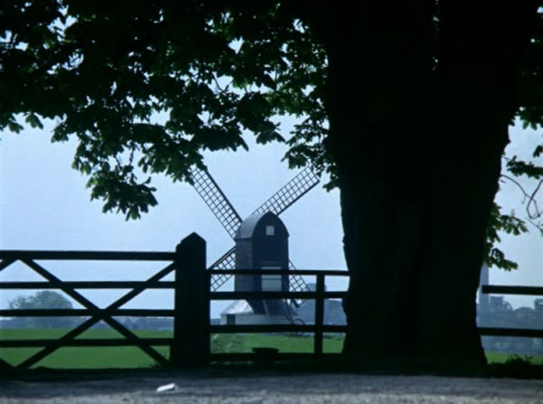
THE CHAMPIONS: The Final Countdown (John
Gilling: Early 1968)
The pilot is unable to help himself as his car
careers towards a sheer cliff.
THE AVENGERS: All Done with Mirrors (Ray
Austin: May 1968)
Watney drives his car off the road when he hears a cry for help from
Tara. Later Steed receives a message from Tara whilst driving his
yellow Rolls along the same road.
THE AVENGERS: Super Secret Cypher Snatch
(James Hill: June 1968)
Wilson is posted on lookout to intercept an exchange of top-secret
information. An agent dressed as an old woman cycles past, but as he
dashes to a waiting helicopter Wilson appears on a motorbike.
THE SAINT: The World Beater (Leslie
Norman: Summer 1968)
Whilst on a second test drive a waiting van attempts to force Simon's
sports car off the road.
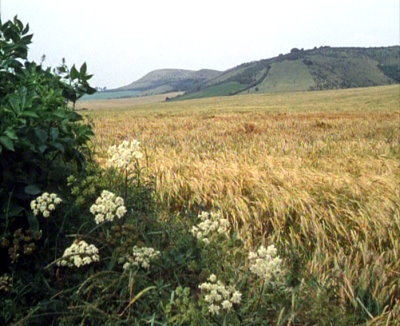
THE SAINT: The Man Who Gambled With Life
(Freddie Francis: August 1968)
Simon is enjoying a picnic and admires the view (Ivinghoe
Beacon seen
from Pitstone).
THE SAINT: Where the Money Is (Roger
Moore: Summer 1968)
The Saint is puzzled when Jean and the rest of the kidnappers manage to
track Simon and Jenny to a remote stretch of road.
THE SAINT: The Desperate Diplomat (Ray
Austin: 1968)
Simon Templar and Sara Douglas drive towards Jason Douglas' hide out.
Later Simon watches as Faber's car goes out of control, flips on its
side and crashes down a steep bank.
DEPARTMENT S: The Double Death of Charlie Crippen
(John Gilling: Autumn 1968)
A nervous chauffer looks back at the passenger he is driving in the
Rolls Royce. Unknowingly a farmer drives towards his truck towards the
site of the assassination attempt.
DEPARTMENT S: Who Plays the Dummy? (John
Gilling: Autumn 1968)
A remote controlled white Chevrolet is spotted by a motorcycle
policeman who pursues it until it crashes. Later Jason and Annabelle's
white Jaguar is taken over by remote control. Jason smashes the
windscreen and Annabelle jumps from the car, followed by Jason at the
last minute before the car crashes. Stewart is tied to the wheel of a
red Mercedes sent to collide with a NATO convoy. Jason overpowers one
of the gang and sets off in his Mustang with Annabelle. They succeed in
freeing Stewart, and the Mercedes crashes by the side of the road.
DEPARTMENT S: The Treasure Of The Costa Del Sol
(John Gilling: September 1968)
Thorn and Cal drive along the coast road to the spot from which they
are to dive.
DEPARTMENT S: The Man Who Got a New Face
(Cyril Frankel 1968)
Gerhard and Nicole make their way to the Italian border, but Annabelle
is blocking .the road with her car.
RANDALL AND HOPKIRK [DECEASED]:
It's Supposed to be Thicker Than
Water (Leslie Norman: September 1968)
Johnny Cracken's borrowed Jaguar runs out of control on country road.
THE AVENGERS: Thingumajig (Leslie
Norman:
January 1969)
Steed drives Teddy in his yellow Rolls to investigate a mysterious
death at Teddy's church.
JASON KING: A Royal Flush (Roy
Ward Baker:
1971)
Jason is followed from the hospital by Enzio.
JASON KING: Toki (Jeremy Summers:
1971)
A drunken Olivier is unable to control the car into which he has been
put and careers towards a cliff.
THE ADVENTURER: Mr Calloway is a Very Cautious Man
(Barry Morse)
Gene Bradley (Gene Barry) and Mr Parminter (Barry
Morse) are in Gene's
car driving back from the cemetery when the brakes fail. The car skids
out of control and crashes into a tree. Russell (David
Hargreaves) and
Soames (Anthony Rowlands) are following.
(Spotted by Jaz Wiseman, January 2005)
Film:
QUATERMASS II (1957)
NOWHERE TO RUN (1958)
CROSSPLOT (1969)
FIRST KNIGHT (1995)
B2: Edlesborough

THE BARON: The Maze
(Jeremy Summers: June 1966)
The Baron's Jensen drives along the road towards the church
(Edlesborough Church seen from Chiltern View Farm, Leighton
Road on the
B440) and does not stop for a hitchhiker.
B3: Chesham
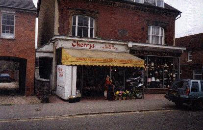
HAMMER HOUSE OF HORROR: The Silent Scream (Alan
Gibson:
1980)
Chuck (Brian Cox) arrives at the Central Pet Shop (68
Broad St.) where
he gets a job from the owner, Blueck (Peter Cushing).
Eventually Chuck
and Annie (Elaine Donnelly) are held prisoner and
even a visit from a
police officer (Robin Browne) fails to free them.
INSPECTOR MORSE: The Day of the Devil (Stephen
Whittaker: 1992)
Canon Timothy Perry (Richard Griffiths) is playing
the organ in his
church (St. Mary's Church, Church Street) when John
Barrie (Keith
Allen) appears out of the shadows to ask him about Morse. The
police
are called and Lewis (Kevin Whately) checks with
the other police
officers before entering the vicarage. The next day Lewis and Morse
(John Thaw) talk to the Canon about Barrie's visit
outside the church.
Film:
PASSWORD IS COURAGE
(1962)
Television:
THE ALL NEW ALEXEI SAYLE
SHOW (1993)
B4: The Bridgewater
Memorial, Aldbury (to climb tower £)

THE PROTECTORS: Chase
(Harry Booth: 1972)
Harry escapes and finds refuge from his pursuers (Patrick
Magee) in the
monument.
B5: Aldbury

THE AVENGERS: Dead Man's Treasure
(Sidney Hayers: June 1967)
Arriving at Swingingdale, Mrs Peel (Diana Rigg) and
Mike (Norman
Bowler) are the first to find the clue 'Galding - Mr Smith's
Hammer' in
a removal van.
THE CHAMPIONS: The Experiment (Cyril
Frankel:
June 1967)
Craig and Richard drive round, searching for a lead on Sharron (Station
Road). Craig and Richard's car arrives at a village pub as
they search
for a lead on Sharron.
(Station Road Identified by Michael Groves, May 2022)
THE AVENGERS: Murdersville (Robert
Asher:
August 1967)
Hubert (John Ronane) and Mickle (Colin
Blakely) ignore a murder outside
the pub of Little Storping-in-the-Swuff. Frederick Williams (Andrew
Lawrence) arrives at the village. Croft (Eric Flynn)
goes to the Public
Library and Reading Rooms. Mrs Peel (Diana Rigg)
finds Hubert and
Mickle in her car, and follows Dr. Haymes (Ronald Hines)
to his
surgery. Mrs Peel finds herself surrounded by Prewitt (John
Sharp),
Jenny (Sheila Fern), Hubert, Mickle and Haymes and
is pursued to a
farmyard. Haymes and the villagers duck Mrs Peel in the village pond.
THE SAINT: The Desperate Diplomat (Ray
Austin: 1968)
Simon arranges to meet Sara at the village of Penbridge after her
escape.
THE SAINT: The Man Who Gambled With Life
(Freddie Francis: August 1968)
Simon drives his Volvo through a village as he searches for the
destination of the Longman's helicopter.
THE AVENGERS: Homicide and Old Lace (John
Hough: January 1969)
Stock footage from Murdersville of the murder outside the pub.
INSPECTOR MORSE: Absolute Conviction (Antonia
Bird: 1991)
Morse (John Thaw) takes Lewis (Kevin
Whately) to a local pub (The
Greyhound) to talk over the case so far. Morse revisits the
pub with D.
S. Cheetham (Steven Mackintosh) after interviewing
Sherman and they
spot Mrs Stevens (Diana Quick) with Dr. Archer (David
Howey). Later
Morse discovers Sherman's secret and races through the village in his
Jaguar.
Films:
JASSY (1947)
THE DIRTY DOZEN (1967)
CROSSPLOT (1969)
HOPSCOTCH (1980)
Television:
THRILLER: Kiss
me and Die (1973)
SHILLINGBURY TALES (1981)
National Lottery advert (1994)
B6: Stocks Hotel, Aldbury
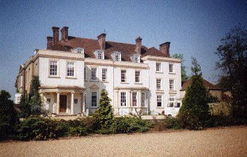
THE AVENGERS: Murdersville (Robert
Asher:
August 1967)
Forbes (Norman Chappell) unloads Croft's
possessions carefully - until
Mickle (Colin Blakely) and Hubert (John
Ronane) turn up to 'lend a
hand'. Mrs Peel (Diana Rigg) and Croft (Eric
Flynn) find the wrecked
valuables and Mrs Peel is knocked out when finding Forbes' body. She
returns to the house with Dr. Haymes (Ronald Hines)
to find the
sleeping Higgins (Joseph Grieg).
B7: Ashridge College, nr.
Little Gaddeston (on toll Road £)

THE AVENGERS: Get-A-Way!
(Don Sharp: February 1968)
Monks patrol the battlements of the monastery/prison where Steed
arrives at check on Lubin and Ezdorf. Lubin (Robert Russell)
escapes in
an army truck from the prison.
THE AVENGERS: Who Was That Man I Saw You With?
(Don Chaffey: January 1969)
Establishing shot of Mother's castle HQ.
Films:
THE DIRTY DOZEN (1967)
B8: Bovingdon Airfield,
Chesham Road, Bovingdon (partly demolished) 
THE AVENGERS: The Hour That Never Was (Gerry
O'Hara: July 1965)
Steed (Patrick Macnee) and Mrs Peel (Diana
Rigg) make for the mess hall
at RAF Hamelin, and find the camp deserted. Steed hides in a fallout
shelter from a sound wave, and meets Hickey (Roy Kinnear)
whom he later
finds dead. He also follows the milk float as it collects and delivers
bodies.
THE AVENGERS: Take Me to Your Leader (Robert
Fuest: November 1968)
Tara and Captain Andrew watch as Fang, the Wonder Dog, delivers a
mysterious case to a waiting motorcyclist. Captain Andrew’s men attempt
to catch the courier but Tara and Andrew manage to intercept their prey.
(Identified by Barry Clay, July 2003)
THE ADVENTURER: Deadlock (Val Guest:
??)
Gene Bradley (Gene Barry) arrives at U.S.A.A.F
Turkey Essenalya Station
to make an exchange with Sakuma (Wolfe Morris). As
Franz Kolmar (Mervyn
Johns) gets into Bradley's car Kay Masterson (Jennie
Linden) drives off
with him, leaving Bradley to fight it out with Sakuma's men.
THE PERSUADERS!: Element of Risk (Gerald
Mayer:
23rd Feb 1971)
The American Airbase.
(Spotted by Jaz Wiseman)
Film:
THE WAR LOVER (1962)
633 SQUADRON (1964)
THE LIQUIDATOR (1966)
HANNOVER STREET
(1979)
SILVER DREAM RACER
(1980)
B9: Mentmore Park,
Mentmore, nr. Leighton Buzzard
INSPECTOR MORSE: Cherubim & Seraphim
(Danny Boyle: 1991)
Vicky Wilson (Liza Walker) and Sally Smith (Anna
Chancellor) arrive at
Swanick Park with the organisers of the party in their red van.
Inspector Morse (John Thaw) and Lewis (Kevin
Whately) follow a convoy
of cars to the event that evening and after the young people have
entered the house they look for their own way in. Sergeant Lizzie
Haines (Louix Beattie) and her team of undercover
police officers
already have the event under surveillance and they witness Morse
chasing after Bristow (Paul Brightwater) in his
Jaguar and Bristow's
fatal crash.
Film:
DUEL OF HEARTS (1990)
Television:
Ferrero Rocher advert
(1993)
Heinz Tomato Ketchup advert
(1992)
B10: Rossway Park, nr.
Berkhamsted
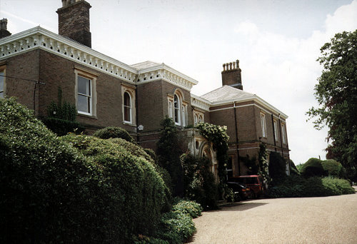
THE SAINT: The Best Laid Schemes (John
Moxey: May 1967)
The saint arrives in his Vovo at the late Captain Fleming's house to
investigate his death. Later an intruder breaks into the house.
THE SAINT: The Organisation Man (Leslie
Norman: Spring 1968)
Jonathan Roper's house which is the base for a private army.
THE AVENGERS: Whoever Shot Poor George Oblique Stroke XR40?
(Cyril Frankel: April 1968)
Steed arrives at Sir Wilfred Pelley's house in his yellow Rolls Royce
Silver Ghost. Later Steed returns to try and persuade Sir Wilfred to
work on the repair of the XR40 and is watches by Jacobs (John
Porter-Davison). Keller (Tony Wright)
arrives back at the house in a
black Rolls Royce with news of Jacobs' death. That night Tara arrives
in her Cobra posing as Prunella Pelley.
INSPECTOR MORSE: Absolute Conviction (Antonia
Bird: 1991)
Morse (John Thaw) and Lewis (Kevin
Whately) arrive at the Cryer's house
in Morse's Jaguar. They are met by Paul (Peter Lee-Wilson)
who is
interviewing Mrs Cryer (Suzanna Hamilton) with Rob (Paul
Dalton), his
photographer. Morse and Lewis talk to Mrs Cryer after the press leave.
Later Morse returns to find Mrs Cryer and Peter Thornton (Jonathen
Firth) together.
Television:
HAMMER HOUSE OF HORROR: Growing Pains (1980)
B11: Great Gaddesden
HAMMER HOUSE OF MYSTERY AND SUSPENSE:
Black Carrion (John
Hough: Spring 1984)
The Verne Brothers hold a village in their sinister grip.
B12: Arts Educational
School, Tring Park, Tring
GIDEON’S WAY: Morna (Cyril Frankel,
October
1964)
Gideon and David Keen go to Morna’s school to interview the
headmistress. Gideon (John Gregson) also interviews
Leonard Bright
(John Justin) the headmaster.
THE SAINT: A Double in Diamonds (John
Gilling: February/March 1967)
Garton and Pierre (Anton Rogers) deliver the
Gillingham necklace to
Nicholas' villa.
B13: Watermill Hotel,
Bourne End
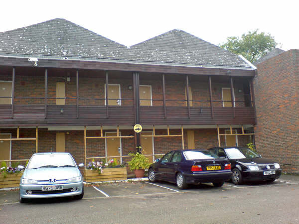
photo: Geoff Dodd
HAMMER HOUSE OF HORROR: The Carpathian Eagle (Francis
Megahy: 1980)
Natalie (Suzanne Danielle) goes to a motel to
change into her alter ego.
(Identified by: Ian Garland, August 2007)
B14: Toms Hill, between
Aldbury and the B4506
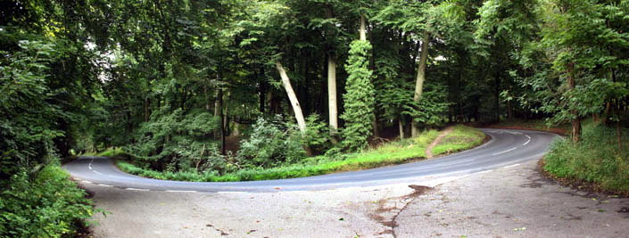
photo: Alan Field
THE SAINT: Queen's Ransom (Roy
Baker:
April 1966)
The Queen and Simon accept the offer of a lift in an old English lady,
Hortense's, Rolls Royce to Porcell. Simon spots that they are being
pursued by one of the assassins, Mustafa.
(Confirmed by Alan Field and Geoff Dodd)
THE PROTECTORS: Chase (Harry Booth:
Autumn 1972)
The Contessa races back to the local store in her car after remembering
seeing Harry’s gun
(Confirmed by Alan Field and Geoff Dodd)
B15: Water End
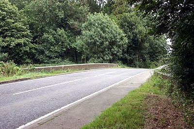
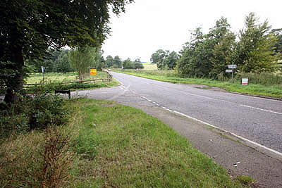
photos: Alan Field
THE SAINT: The Desperate Diplomat (Ray
Austin: 1968)
Simon Templar crosses a bridge (where the A4146 Leighton
Buzzard Road
crosses the River Gade at Water End, with the car turning left into
Potten End Hill) in his Volvo and arrives at the location
ready to
follow the kidnapper's instructions.
(Identified by Alan Field, July 2008)
B16: Norcott Farm Lane,
Dudswell
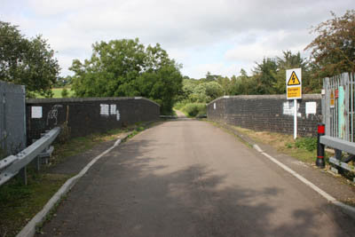
photos: Alan Field
THE SAINT: A Double in Diamonds (John
Gilling: February/March 1967)
Nicholas waits on the bridge for the train carrying Veronica and the
necklace to Brussels. Later Nicholas drives away with Garton, Pierre,
Kate and the kidnapped Veronica.
(Identified by Alan Field, September 2008)
B17: B4506/ Ashridge Estate
THE BARON: Something for a Rainy Day
(Cyril Frankel: November 1965)
Mannering and Cordelia drive to Chateau Celeistine after meeting with
Seldon at the caravan site (back projection WB26381).
DEPARTMENT S: A Cellar Full of Silence (John
Gilling: Spring 1968)
Jason and Stewart race to St. John's Wood to save Annabelle.
DEPARTMENT S: The Shift That Never Was (John
Gilling: Autumn 1968)
Stewart Sullivan and Jason King drive to the Northover Atomic Power
Station in the hope of finding Annabelle. Later Jason and Stewart leave
Northover Atomic Power Station after the gold has been stolen and
discuss the villain’s possible next steps.
DEPARTMENT S: The Trojan Tanker (Ray
Austin:
June 1968)
After detonating an explosive device Kent goes to see the result (back
projection). Later Sullivan and King race to St Johns Wood in
Jason’s
Bentley.
DEPARTMENT S: Who Plays the Dummy? (John
Gilling: Autumn 1968)
After leaving the race track where Gilford is testing his racing cars,
a radio controlled van attempts to run Sullivan’s red Fiat off the road
and crashes itself.
(Spotted by Alan Field, October 2008)
B18: Clipper Down, Beacon
Road, Ashridge
THE AVENGERS: Escape in Time (John
Krish:
September 1966)
Vesta lures Mrs Peel (Diana Rigg) into a field with
a stuffed crocodile
where she is attacked by a huntsman on a motorcycle (Rocky
Taylor). Mrs
Peel tricks the motorcyclist in to driving over steep drop and he runs
off after his motorbike catches fire.
THE AVENGERS: The Bird Who Knew Too Much (Roy
Rossotti: October 1966)
Verret (Michael Coles) and Robin (Clive
Colin-Bowler) Villains spy on
Muswells Back.
B19: Two Waters Gas Works,
London Road, Hemel Hempstead (partly redeveloped)
THE AVENGERS: The Forget-Me-Knot (James
Hill:
December 1967)
Brad (Douglas Sheldon) is working on his motorbike
when Carl (Alan
Lake) runs out of The Vitrium Glass Works to tell him they
have an
urgent job to do for the boss. They set off together on another
motorbike. Later, Emma Peel is taken to the glass works in Steed’s
Bentley. Later still, Steed (Patrick Macnee) and
Burton (Jeremy Young)
arrive at “The Glass House’ in Burton’s Hillman car. It is here that
Steed reveals his suspicions about Burton. After a fight Steed knocks
out Burton. Tara King (Linda Thorson) arrives in
her AC Cobra just in
time in here and knocks Carl out with her handbag. Burton makes a dash
for it but is shot by Mrs Peel with an amnesia dart from the factory.
(Identified by Dave Rogers and Mike Richardson, 1989)
B20: Alderton Drive,
Ringshall
UFO: Flight
Path (Ken Turner: May 1969)
Paul Roper (George Cole) arrives home in his bronze
S.H.A.D.O. car to
find Carol (Sonia Fox), his Wife, has been visited
by a dangerous
intruder. Some nights later the Ropers arrive home after a night out.
As Paul puts his car away he takes the opportunity to pass on the
information requested of him.
(Spotted by Sam Denham, April 2010)
UFO: The
Responsibility Seat (Alan Perry: September 1969)
Straker arrives home late at night with Jo Fraser.
(Spotted by Sam Denham, April 2010)
B21: Hemel Hempstead Civic
Centre, Dacorum Way
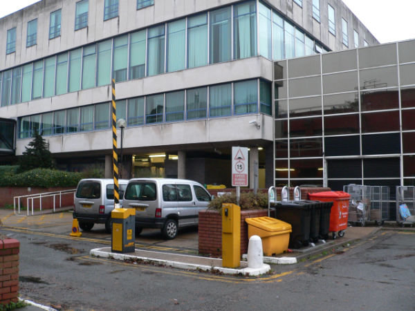
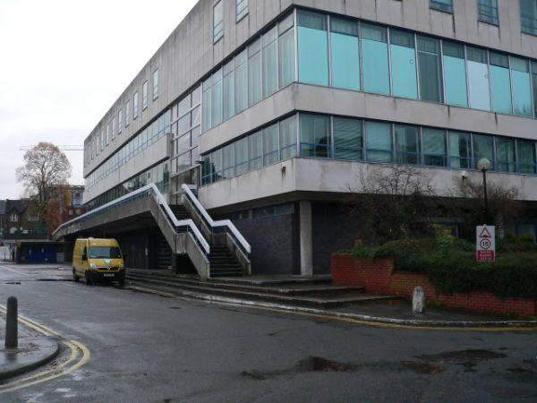
photos: Ed Osborne
THE CHAMPIONS: Get Me Out of Here! (John
Moxey: June 1967)
From a café across the street Sharron and Craig Sterling watch “The
Carnisero”, where Professor Anna Maria Martes is being held. That night
Craig and Richard break into the The Carnisero and free Maria Martes.
(Identified by Ed Osborne, November 2010)
B22: Gravel
Path, Ellesmere Road, Berkhamsted
THE SAINT: The Abductors (Jeremy
Summers:
??)
Simon drives into the village of Epernay to ask directions to Chateau
Belleville (Gravel Path, George Street).
(Identified by Andrew Chilcott, August 2013)
THE BARON: The Seven Eyes of Night (Robert
Asher: April 1966)
Cordelia follows Jeff Walker in The Baron's Jensen not knowing that she
is leaving Mannering in mortal danger (Gravel Path, George
Street).
(Identified by Andrew Chilcott, August 2013)
B23: Barnes Lodge, Kings
Langley (demolished 1975)
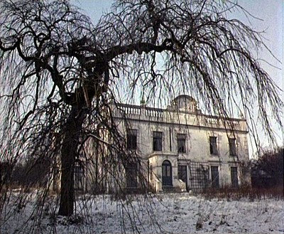
THE SAINT: The Desperate Diplomat (Ray
Austin: 1968)
Simon Templar (Roger Moore) and Sara (Susan
Farmer) arrive in at the
house near Zurich where Jason Douglas is hiding. Unfortunately, Walter
Faber (Robert Hardy) is already waiting for them.
THE BARON: Something for a Rainy Day
(Cyril Frankel: November 1965)
Max Holder and Lucas (Derek Newark) are holding Ann
Seldon at the
Chateau Celeistine. Mannering (Steve Forrest) and
Cordelia (Sue Lloyd)
attempt to rescue Anne, but The Baron is confronted by a vicious guard
dog and is captured by Lucas.
Film:
THE HAUNTING (1962)
B24: Stags
End,
Gaddesden Lane, Hemel Hempstead
RANDALL AND HOPKIRK [DECEASED]: The
Smile Behind the Veil (Cyril Frankel: October 1968)
Hooper Jeff is parked up, consulting a map, opposite the Stonehurst
entrance. Brooks leaves in his Hillman Minx.
(Identified by Bryn Willetts, August 2021)
To C